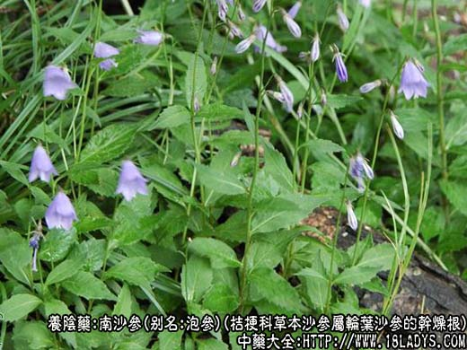
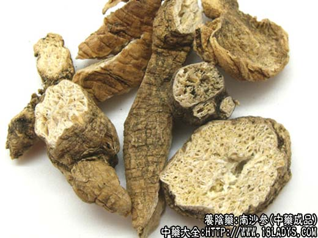
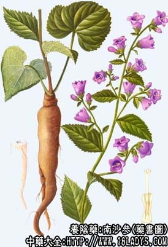

本品为常用中药。始终《神农本草经》。古代本草所载均属南北沙参。至清代《本草逢源》，始分为北北沙参和南北沙参两种。习惯认为北沙参质佳，药用以北沙参为主。
（二）南沙参
别名：泡参。
来源：为桔梗科多年生草本植物沙参属轮叶沙参、杏叶沙参、阔叶沙参及同属多种植物的干燥根，野生。
产地：主产于中南、西南、华东地区，其他地区亦有分布。
性状鉴别：本品略呈圆柱形或圆锥形，略扭曲，偶有分歧，上端较粗，下端渐细，长5～20余厘米，直径1～3厘米。顶端常有粗细不一的茎芦。表面淡黄色。上部及茎芦上多有横皱纹，皱纹沟内有未去尽的褐色表皮，形成续断的环状斑纹。中下部有皱纹沟纹，并有须根痕及褐色斑点。质轻松，易折断，断面不平齐，黄白色，呈散乱层片状，有许多裂隙，无木质心。气微，味苦微苦。
以条粗长均匀，淡黄白色，无粗皮者为佳。
附：南沙参的根。性味与北沙参相同，含沙参皂甙，有清热祛痰作用。虽也能治肺热咳嗽，但较少用。
炮制：切咀，生用。
效用：与北沙参相同，唯力稍逊。与北沙参相比；北杀参滋阴作用较强，南沙参祛痰作用较好。
注：1、沙参属诸参类，反蒺藜。
2、根据《中药志》载，除上述一种北沙参外，尚有以同科植物田蒉蒿和硬阿魏的根作北沙参使用者。但现商品少见。此外河北承德地区以石竹科蝇子草属植物的根作沙参使用，称“承德沙参”。加工后的商品外形与正文所述正品相似，疗效是否相同还不清楚。以上三种植物均系野生。商品长短粗细不一，不及栽培品枝条均匀。
3、据上海科学技术出版社《中药材品种论述》论述，南沙参属植物，国内分布甚广，有文献报导者40余种。商品形态相同，不易区别，同等药用。